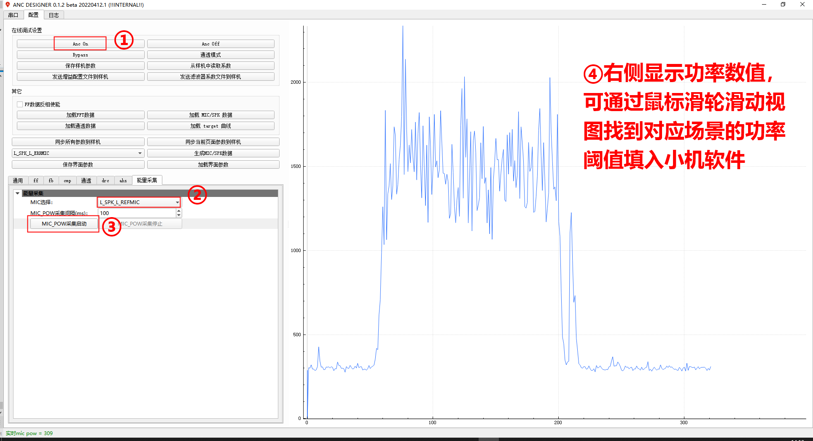
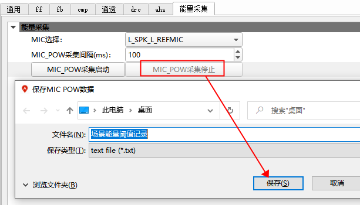

12.4.4. ANC软件功能配置
12.4.4.1. ANC场景自适应配置
12.4.4.1.1. 需求简介
简介：ANC场景自适应（增益），能够根据环境的噪声能量阈值变化实时调整降噪增益，以达到最佳降噪效果体验；
关键词：（操作）自适应、（输入）噪声能量、（输出）调增益。
12.4.4.1.2. 软件配置
/*
ANC场景增益自适应配置
(场景是变量，与耳道自适应功能相互独立)
*/
#define ANC_ADAPTIVE_EN 1 /*ANC增益自适应使能*/
#define ANC_ADAPTIVE_MODE ANC_ADAPTIVE_GAIN_MODE /*ANC增益自适应模式*/
#define ANC_ADAPTIVE_TONE_EN 0 /*ANC增益自适应提示音使能*/
ANC_ADPTIVE_EN：ANC自适应增益使能开关；
ANC_ADAPTIVE_MODE：ANC自适应增益模式，默认为自动切换增益等级；
ANC_ADAPTIVE_TONE_EN：ANC自适应提示音使能，自适应等级切换时播放提示音，方便自适应功能测试，不建议作为实际产品功能。
anc_adap_param_t anc_adap_param[] = {
//等级0
{
.pow_thr = 0XFFFFFFFF, //当前等级能量高阈值
.default_flag = 1, //默认等级标志
.gain = 1024, //当前等级对应增益 range [0-1024]
//(高->低)高增益等级 向当前等级淡入时间*100ms, range [1 - 200]*/
.gain_decrease_fade_time = 10,
//(低->高)低增益等级 向当前等级淡入时间*100ms, range [1 - 200]*/
.gain_increase_fade_time = 10,
//当前等级能量低阈值，与MIC GAIN相关, 此默认值 MIC_GAIN = 4;
.pow_lthr = 700,
},
//等级1
{
.pow_thr = 200,
.gain = 350,
.gain_decrease_fade_time = 10,
.gain_increase_fade_time = 10,
.pow_lthr = 0,
},
};
pow_thr:当前等级能量高阈值，0等级的高阈值固定为0XFFFFFFF；
default_flag: 默认等级标志；
gain:当前等级对应的增益，range[0-1024]
gain和dB的转换公式如下(0dB -> gain = 1024):
gain = 10^(dB/20) * 1024gain_decrease_fade_time：(高->低)高增益等级 向当前等级淡入时间(单位 100ms),如设置10，则淡时间 = 10*100ms; range [1 - 200]；
gain_increase_fade_time：(低->高)低增益等级 向当前等级淡入时间(单位 100ms), 如设置10，则入时间 = 10*100ms;range [1 - 200]；
pow_lthr: 当前等级能量低阈值, 最低增益等级的低阈值为0。
注意：
1）pow_lthr表示进入该等级的最低阈值，pow_thr表示进入该等级的最高阈值；此阈值与MIC模拟增益成正比
2）前等级的pow_lthr与后等级的pow_thr之间需要有隔离带（参考标准SDK的设置范围），隔离带越大越稳定，否则容易处于临界范围，会频繁切换等级。
12.4.4.1.3. API定义
//ANC自适应模式
#define ANC_ADAPTIVE_MANUAL_MODE 0 //自适应手动模式-手动切换等级
#define ANC_ADAPTIVE_GAIN_MODE 1 //自适应增益模式-自动切换等级
/*
切换ANC自适应模式
param: mode 自适应模式（手动/自动）
lvl 手动档位等级 (自动模式传0)
*/
void audio_anc_adaptive_mode_set(u8 mode, u8 lvl);
可调用audio_anc_adaptive_mode_set接口，切换自动/手动模式，手动模式需要设置对应的等级，从0 开始。
12.4.4.1.4. 调试方法
Step1:确定ANC的MIC模拟增益，如后修改MIC增益则需重新测量阈值；
Step2:确定等级个数，以及每个等级的增益，所对应场景/声压要求；
Step3:确定各个等级高/低阈值；
声压（dB）区分：播放噪声源，用分贝仪靠近耳机，调整噪声源音量，直至分贝仪显示目标声压（dB），并记录当前声压的阈值；
场景区分：进入到对应场景（地铁/办公室..），记录当前场景的阈值；
高/低阈值获取方法如下：

如上图所示，在ANC_DESIGENR工具中，先打开ANC模式（步骤①），在能量采集界面选择L_SPK_L_REFMIC（步骤②），点击MIC_POW采集启动（步骤③），右边即可显示当前FF的功率能量谱，通过鼠标滑动，即可知道当前场景对应的功率值范围；

点击MIC_POW采集停止，会将当次MIC功率谱数据保存成文档, 可离线分析。
根据当前案例数据分析，对应低阈值为300，高阈值为900，填写如下：
anc_adap_param_t anc_adap_param[] = {
//等级0
{
.pow_thr = 0XFFFFFFFF,
.default_flag = 1,
.gain = 1024,
.gain_decrease_fade_time = 10,
.gain_increase_fade_time = 10,
.pow_lthr = 900, //针对该案例修改, 高阈值
},
//等级1
{
.pow_thr = 300, //针对该案例修改，低阈值
.gain = 350,
.gain_decrease_fade_time = 10,
.gain_increase_fade_time = 10,
.pow_lthr = 0,
},
};
12.4.4.1.5. FAQ
默认2档，可支持更多等级：继续添加anc_adap_param结构体数组成员即可，注意阈值需从大到小排列；
anc_adap_param_t anc_adap_param[] = {
//等级0
{
...
},
//等级1
{
...
},
//等级n...
{
...
},
};
频繁切换，导致体验差的问题：
扩大前等级pow_lthr与后等级的pow_thr隔离带，避免处在临界范围频繁切换；
增大从高到低的增益切换时间gain_decrease_fade_time。
12.4.4.1.6. CPU差异
特性 |
700N |
701N |
708N |
|---|---|---|---|
ANC场景自适应（增益） |
× |
√ |
√ |
12.4.4.2. ANC啸叫检测配置
12.4.4.2.1. 需求简介
简介：啸叫通常发生在声反馈回路中，当扬声器（speaker）的输出信号被麦克风回采时，声通路形成闭合回路，信号在声反馈回路中不断叠加放大形成正反馈，导致单频的啸叫声音；
在ANC/通透模式，当环路增益比较大，或者系统不稳定（比如手捂耳机改变声波反射特性）导致啸叫，本功能用于检测到啸叫信号，然后降低环路增益；
关键词：（触发源）啸叫，（输出）调增益
12.4.4.2.2. 软件配置
/*
ANC啸叫检测功能配置，检测啸叫时压低增益，定时恢复至正常增益
*/
#define ANC_HOWLING_DETECT_EN 1 /*啸叫检测使能*/
#define ANC_HOWLING_MSG_DEBUG 0 /*啸叫调试流程打印*/
#define ANC_HOWLING_DETECT_CHANNEL 0 /*啸叫检测通道；0 FF MIC ; 1 FB MIC*/
/* 1、检测配置 */
#define ANC_HOWLING_DETECT_CORR_THR 200 /*啸叫灵敏度设置, 越小(越灵敏，容易误触发), range [100 - 255]; default 200 */
#define ANC_HOWLING_DETECT_PWR_THR 1200 /*啸叫阈值设置, 用于解决小声啸叫不触发的问题，越小(容易误触发), range [100 - 32767]; default 1200*/
#define ANC_HOWLING_DETECT_TIME 100 /*啸叫检测时间(单位ms), 越小(触发时间短，容易误触发) range [10 - 500]; default 100ms*/
/*
2、触发配置
啸叫触发后，增益直接降低至TARGET_GAIN
持续HOLD_TIME后，再经过RESUME_TIME, 缓慢恢复至正常增益
*/
#define ANC_HOWLING_TARGET_GAIN 0 /*啸叫时的目标增益, range [0 - 16384]; default 0 */
#define ANC_HOWLING_HOLD_TIME 1000 /*啸叫目标增益的持续时间(单位ms), range [0 - 10000]; default 1000 */
#define ANC_HOWLING_RESUME_TIME 4000 /*恢复到正常增益的时间(单位ms), range [200 - 10000]; default 4000 */
ANC_HOWLING_DETECT_CHANNEL啸叫检测通道配置说明：
通透模式啸叫 ：必选FF MIC通道检测；
ANC模式啸叫：
FF MIC通道(推荐使用)：啸叫检测频率下限更低（实测约1.5k-22k）,相对易受外部激励影响，导致误触发；
FB MIC通道：检测频率(2K-22K)，相对易受耳机内部喇叭影响，导致误触发；
12.4.4.2.3. 调试方法
Step 1: 检测配置ANC_HOWLING_MSG_DEBUG 配置 1, 开启啸叫调试流程打印
ANC_HOWLING_TARGET_GAIN 配置 16384 ，进入测试模式，只检测不修改增益，观察打印，如下
[00:00:18.789][hd]corr , 171, 159, 147, 135, 123, 221 , yk:9867, 0x3f //corr 221, yk 9867 [00:00:18.801][hd]corr , 171, 159, 147, 135, 123, 235 , yk:10312, 0x3f //corr 235, yk 10312 [00:00:18.812][hd]corr , 183, 171, 159, 147, 135, 233 , yk:10342, 0x3f //corr 233, yk 10342 [00:00:18.816][hd]corr , 173, 161, 149, 137, 125, 239 , yk:10306, 0x3f //corr 239, yk 10306 [00:00:18.824][hd]corr , 179, 167, 155, 143, 131, 233 , yk:10998, 0x3f //corr 233, yk 10998 [00:00:18.827][hd]corr , 179, 167, 155, 143, 131, 211 , yk:11087, 0x3f //corr 211, yk 11087 [00:00:18.834][hd]corr , 179, 167, 155, 143, 131, 211 , yk:11127, 0x3f //corr 211, yk 11127
corr 表示本次啸叫灵敏度（每一行内选取最大值）， yk 表示本次啸叫阈值 根据啸叫打印信息筛选信息
//corr **, yk **，发现corr 最小值为211， yk 最小值为9867，可配置如下ANC_HOWLING_DETECT_CORR_THR = 200
ANC_HOWLING_DETECT_PWR_THR = 9000
Step 2： 触发配置（啸叫触发后，增益直接降低至TARGET_GAIN，持续HOLD_TIME后，再经过RESUME_TIME, 缓慢恢复至正常增益）ANC_HOWLING_TARGET_GAIN 配置为0，表示触发啸叫后的目标增益为0；
根据恢复时间需求，配置ANC_HOWLING_HOLD_TIME、ANC_HOWLING_RESUME_TIME
Step 3: 误触发调试（如播歌、耳机震动（敲击/佩戴）、外部单频激励）可参考
Step 1, 分析误触发的场景对应corr、yk 打印情况，针对性提高ANC_HOWLING_DETECT_CORR_THR、ANC_HOWLING_DETECT_PWR_THR，避免在对应场景误检测为啸叫；
12.4.4.2.4. 注意事项
只能等触发了啸叫才能检测到；若提前检测很容易导致误触发；
12.4.4.2.5. CPU差异
特性 |
700N |
701N |
708N |
|---|---|---|---|
啸叫检测 |
× |
√ |
× |
12.4.4.3. ANC降噪/通透模式 增益配置
12.4.4.3.1. 需求简介
简介：在产品开发中，用户可根据自身需求和环境条件，手动调整ANC的降噪/通透强度，如常见的 “轻/中/深度降噪”，可通过调增益的方式来完成，配置fade增益的方法如下。
优势：调试简单，占用资源少；
关键词： （操作）手动、（输出）调增益
12.4.4.3.2. 注意事项
fade gain统一操作“降噪模式/通透模式”, 不区分 ；如产品需要区分，由开发者自行处理；
fade_gain 管理逻辑：SDK会以当前最低fade_gain生效，兼容多方同时操作fade_gain；
fade_gain 处于ANC后级增益，不会覆盖ANC原有调试参数/产测参数（anc_gains.bin/anc_coeff.bin）；
fade_gain 最大值16384（等价0dB）,转换公式 fade_gain = 16384 * 10 ^ (dB/20) 。
12.4.4.3.3. 软件配置
在audio_anc_fade_ctr.h添加自定义模式，如下（ANC_FADE_CUTSOM_TEST）。
enum anc_fade_mode_t {
ANC_FADE_MODE_RESET = 0, //复位
ANC_FADE_MODE_SWITCH, //ANC模式切换
ANC_FADE_MODE_MUSIC_DYNAMIC, //音乐动态增益
ANC_FADE_MODE_SCENE_ADAPTIVE, //ANC场景噪声自适应
ANC_FADE_MODE_WIND_NOISE, //ANC风噪检测
ANC_FADE_MODE_SUSPEND, //ANC挂起
//可再此继续添加模式
ANC_FADE_CUTSOM_TEST, //客户自定义模式
};
12.4.4.3.4. API 定义
// ANC fade gain通道
typedef enum {
AUDIO_ANC_FADE_CH_LFF = 0x1, //左耳FF
AUDIO_ANC_FADE_CH_LFB = 0x2, //左耳FB
AUDIO_ANC_FADE_CH_RFF = 0x4, //右耳FF
AUDIO_ANC_FADE_CH_RFB = 0x8, //右耳FB
} ANC_fade_ch_t;
//全部通道
#define AUDIO_ANC_FADE_CH_ALL AUDIO_ANC_FADE_CH_LFF|AUDIO_ANC_FADE_CH_LFB|AUDIO_ANC_FADE_CH_RFF|AUDIO_ANC_FADE_CH_RFB
/*
ANC淡入淡出增益设置
param: mode 场景模式
ch 设置目标通道(支持多通道)
gain 设置增益
notes: ch 支持配置多个通道，但mode 必须与 ch配置一一对应;
当设置gain = 16384, 会自动删除对应模式
*/
void audio_anc_fade_ctr_set(enum anc_fade_mode_t mode, u8 ch, u16 gain);
//删除fade mode
void audio_anc_fade_ctr_del(enum anc_fade_mode_t mode);
12.4.4.3.5. 使用demo
JL701N、JL708N系列使用：
/* 16384等价0dB, 转换公式 fade_gain = 16384 * 10 ^ (dB/20) */
/* 将fade_gain设置为16384 (0dB) */
audio_anc_fade_ctr_set(ANC_FADE_CUTSOM_TEST, AUDIO_ANC_FADE_CH_ALL, 16384);
/* 将fade_gain设置为8192 (-6dB) */
audio_anc_fade_ctr_set(ANC_FADE_CUTSOM_TEST, AUDIO_ANC_FADE_CH_ALL, 8192);
AC700N系列使用（暂不支持增益通道管理，后续会接入）：
/*
param : gain 设置增益（max 16384）
en 默认传1
step 默认传1
*/
void audio_anc_fade(int gain, u8 en, u8 step);
12.4.4.3.6. CPU差异
特性 |
700N |
701N |
708N |
|---|---|---|---|
增益管理 |
× |
√ |
√ |
独立通道控制 |
× |
× |
√ |
AC700系列：
增益管理：
不支持，目前需使用audio_anc_fade接口；
JL701系列：
独立通道控制：
不支持, 增益修改只能设置AUDIO_ANC_FADE_CH_ALL（全部通道）；
JL708系列：
独立通道控制：
支持， LFF、LFB、RFF、RFB 独立控制。